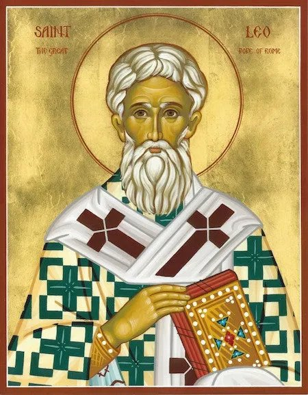
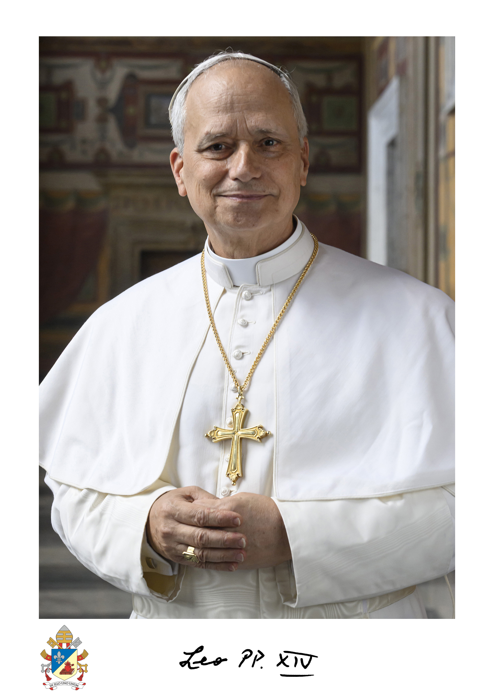
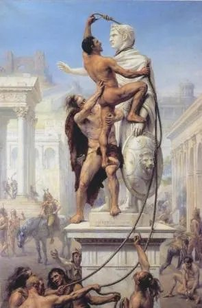
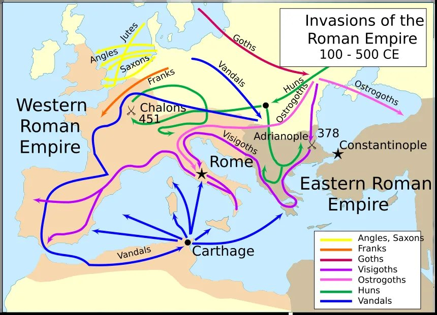
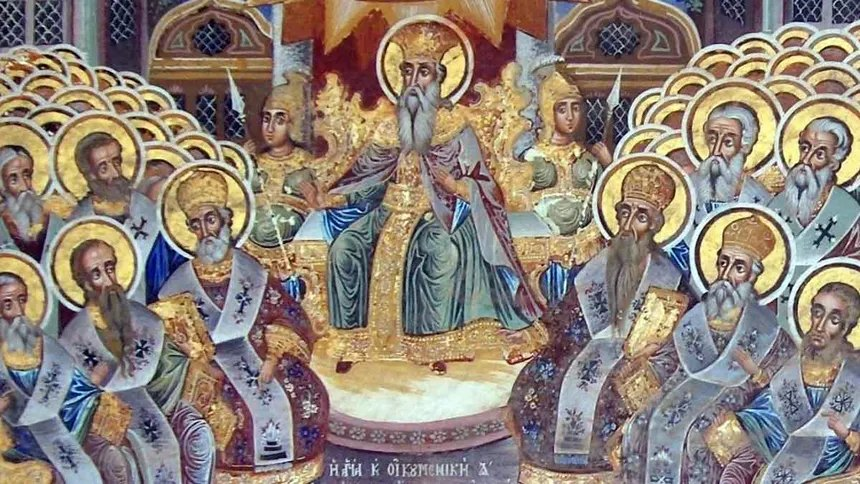
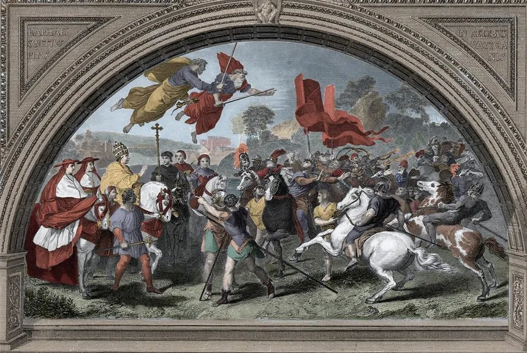
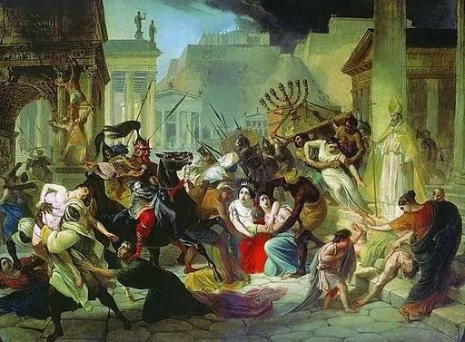
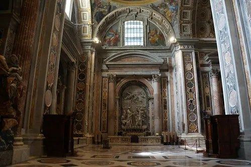

Pope · Saint · Doctor of the Church
Leo the Great
Pope Leo I · c. 400 – 461 AD · Feast: Nov 10
No army. No weapon. No guarantee.
Scroll or press ↓ to begin

Pope Leo I · c. 400 – 461 AD · Feast: Nov 10
No army. No weapon. No guarantee.
Scroll or press ↓ to begin

In 2025, the new pope chose the name Leo XIV. The first Leo is the reason that name carries weight.


While he was still away in Gaul, the Church elected him pope. He found out from a messenger.
In just six years, Leo faced three crises. One was about truth. Two were about survival.


Attila turned his army around. He never reached Rome, and he died the next year.

Rome was looted for two weeks. The city and its people survived.
Do what's possible. Save what you can.
"Christian, remember your dignity."
Full line: "Christian, remember your dignity, and now that you share in God's own nature, do not return by sin to your former base condition."

He made the pope's role as Peter's voice for the whole Church clear for centuries to come.